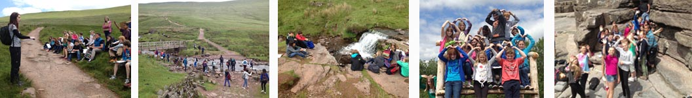

Geography

Geography is the study of our world, its landscapes, peoples, atmosphere and environments. It is also about the role we play in all aspects of our world.
Lessons involve a wide variety of teaching methods to encourage enjoyment of the subject and to encourage all pupils to take part in classes. Pupils work together in groups creating arguments and opinions; ICT is used as much as possible to allow pupils to research their own interests and to expand their knowledge as well as to allow them to present material in their own unique ways; Practical work such as fieldtrips and experiments are used frequently to reinforce the practical nature of the subject and to boost pupils’ skills; Pupils are also encouraged to ask questions themselves to encourage their interest in geography and to allow them to see the relevance to their everyday lives.
The teachers in the geography department expect pupils to work to the best of their ability at all times whether in class or in their homework’s. All work is expected to be on time and neatly produced as this encourages useful work skills for later in life. At the same time, pupils can expect the staff to be hard working, interested and fair at all times.
An ethos of hard work and respect is fostered within the department.
Geography will allow you to acquire a knowledge and understanding of a range of places, environments and geographical patterns at a range of scales from local to global. You will develop a sense of place and appreciation of the environment, as well as awareness of the ways in which people and environments interact.
You will develop an understanding of global citizenship and appreciate that the study of geography is dynamic.
The subject will enable you to acquire and apply skills and techniques, including those of map work, fieldwork and information and communication technology, in order to conduct geographical study and enquiry. Geography will equip you as well as any subject can for your future and the challenges that await you.
Courses available in the Geography Department:
GCSE AS/A2
If you require further information, please contact Mrs N Linforth, Departmental Leader.